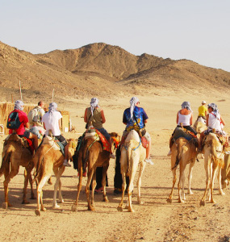

History of Arabic Literature
Introduction
What we know about the origins of the Arabic literary tradition comes about because of the revelation of the Qur’an to Muhammad, the Prophet of Islam, beginning in the late 7th century and the subsequent process of recording the oral pronouncements in written form. The need to interpret the resulting text demanded a knowledge of the origins of the Arabic language and the recording of examples of Arabic that preceded the revelations. The most significant literary forms of expression from this pre-Islamic era, known in Arabic as “al-jahiliyyah” (the period of ignorance), were an elaborate, orally transmitted corpus of poetry, passed down from one generation to another by bards, and highly prized within the tribal environment of the Arabian peninsula.
Poetry
The earliest examples of Arabic poetry that are available to us today were recorded in writing after the revelation of the Qur’an, but they belong to a tradition of orally performed and transmitted poetry that goes back several centuries; by the very nature of the transfer process—from one poet and bard to the next generation, we have no way of dating the origins of the tradition. The primary context of those poets and their poetry is the desert environment and the tribes who tended their animals there—prime amongst them, camels and horses. The poems, still prized by Arabs today as the major jewels of their literary heritage, are thus full of imagery of the desert—sand, wind, the occasional rain-cloud—and celebrate companionship and tribal solidarity while acknowledging the dangers of desert life and the need for sterling qualities to confront them.
The poets, duly trained to serve as tribal propagandists, recited odes in praise of their tribe and its leaders; they elegized those who had died in battle; and they scoffed at their enemies in cutting lampoons. When tribes met for annual celebrations, there would inevitably be poetic jousts, adjudicated by discriminating audiences made up of the tribesmen themselves and their poets. Most notable among these very early poems in Arabic are the seven (or in some collections, ten) “Mu`allaqat,” polythematic poems celebrating tribal values that were recognized for their length and the authenticity of their vision regarding the tribal life of the desert.
This poetic tradition carries over into the Islamic period (beginning in the year 622 CE), and during the turbulent early decades of the Islamic era. With disputes arising between different groups, many of the purposes and features of the pre-Islamic period continued.
It was the spread of Islam to other regions and cultures that led to changes in purpose, content and form. Themes from the earlier poetry—love (ghazal), hunting, wine, and asceticism—now began to be treated as themes for separate categories of poetry, to be placed alongside the continuing tradition of praise poetry (panegyric) addressed to rulers and patrons, who would increasingly be found at the courts of major Islamic cities: Damascus, Baghdad, Cairo, Fez and Cordoba, for example.
This rapid spread of Islam brought the traditions of Arabic literature into contact with other cultures and their literatures; the inevitable consequence of such contacts was a whole series of cultural confrontations and adaptations known in Arabic as the “Shu`ubiyyah,” whereby poets from different cultures asserted the superiority of their traditions and then set about fusing them into a new and dynamic esthetic and critical environment. In that they were much aided by both the advent of paper to the region in the ninth century and the vigorous intellectual community that was fostered by the various disciplines of Islamic studies. The result was a whole series of major poets: Abu Nuwas (d. 813), Al-Buhturi (d. 897), Abu Tammam (d. 845), Ibn al-Mu`tazz (d. 908), Al-Mutanabbi (d. 965) and Al-Ma`arri (d. 1057), to name just a few of the more famous names from the Eastern tradition, to which we need to add Ibn Hazm (d. 1064), Ibn Zaydun (d. 1070) and Ibn Khafaja (d. 1138) from the Andalusian tradition in Spain, where a separate tradition of strophic verse forms also developed and gradually made its way eastward over the course of the ensuing centuries.
This poetic tradition continued, with little variation, for several centuries, and poets continued to be patronized by the rulers of the various dynasties across the Arabic-speaking region. One strand of poetry that was especially vigorous during the period between the 13th and 18th centuries, besides the panegyric dedicated to rulers, was focused on Sufism (Islamic mysticism), with its invocation of the vocabulary of wine and love poetry as a means of expressing the quest for a state of oblivion (Arabic, fana’) through which the believer could aspire to a knowledge of the transcendent.